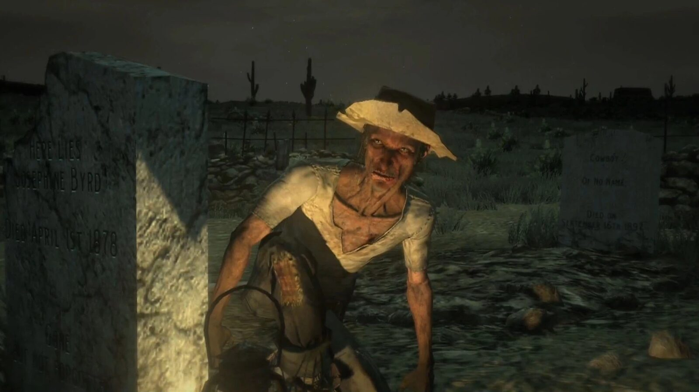
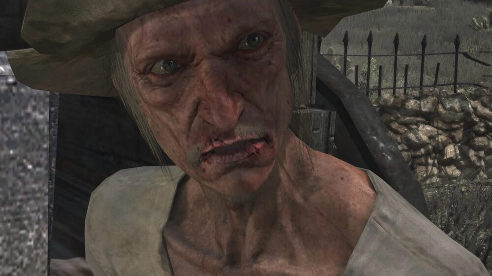
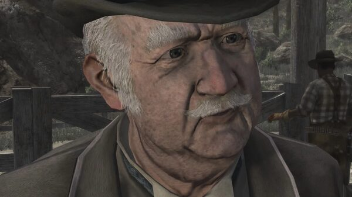
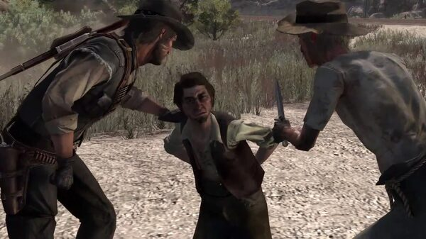
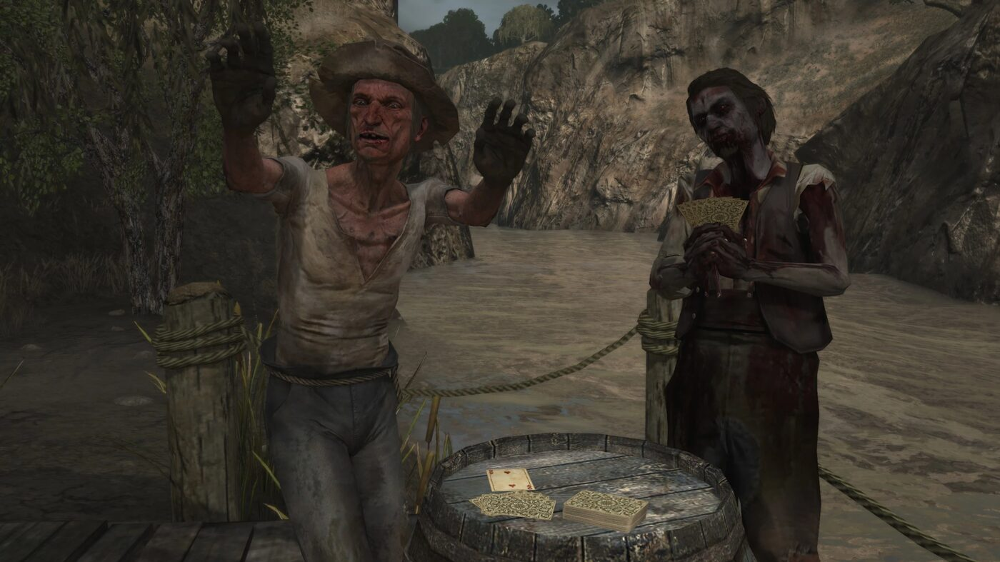

Character · New Austin
Seth Briars
Seth Briars is a deranged grave-robber and treasure hunter John Marston recruits for the assault on Fort Mercer. Unstable and obsessive, he agrees to help only if John first recovers his stolen treasure map.
Nigel West Dickens points John toward Seth, whom he finds digging up graves in the cemeteries of New Austin.
- Born
- Early 1870s
- Status
- Alive (end of RDR1)
- Nationality
- American
- Obsession
- Buried treasure
- Games
- Red Dead Redemption
Biography
The stolen map
In "Exhuming and Other Fine Hobbies", Seth agrees to help John only if John helps recover the half of his treasure map stolen by his former partner Moses Forth. They force the location out of Moses, then escort a wagon of exhumed corpses to Tumbleweed to find the map's other half.
The glass eye
In "Let the Dead Bury Their Dead", the two raid a Tumbleweed mansion for the treasure, only to open the chest and find a single glass eye. Seth is devastated, but honours his word and helps take Fort Mercer.
Personality
Seth is filthy, obsessive and visibly unwell, talking to corpses and to himself. He says he prefers the dead to the living.
Relationships

John Marston
The gunman who chases his treasure with him in exchange for his help at Fort Mercer.

Nigel West Dickens
The con-artist who introduces Seth to John.

Moses Forth
His former partner, who stole half of the treasure map.
Fate
Seth survives Red Dead Redemption. An 1914 newspaper reports that he hauled a sack of real gold and jewels into Blackwater, found deep in Tall Trees, at last striking the fortune his obsession promised.
Behind the scenes
Seth Briars appears in Red Dead Redemption (2010) and its 2024 remaster. He is voiced by Kevin Glikmann. Rob Wiethoff, who plays John Marston, has named Seth his favourite character in the game.
Trivia
- The treasure chest he chases across the story contains only a glass eye.
- His split-personality behaviour and monologues suggest serious mental illness.
- In-game newspapers wrongly credit his former partner Moses Forth for the grave-robbings.
Gallery
